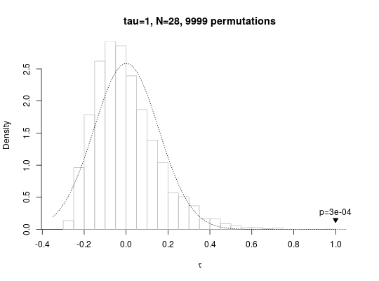
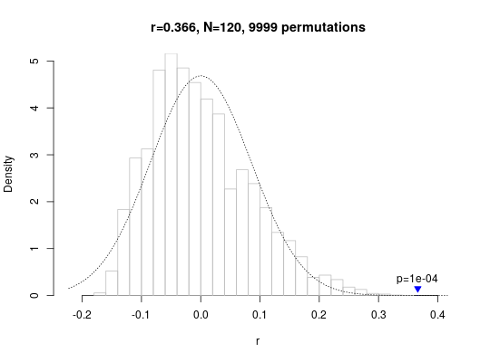
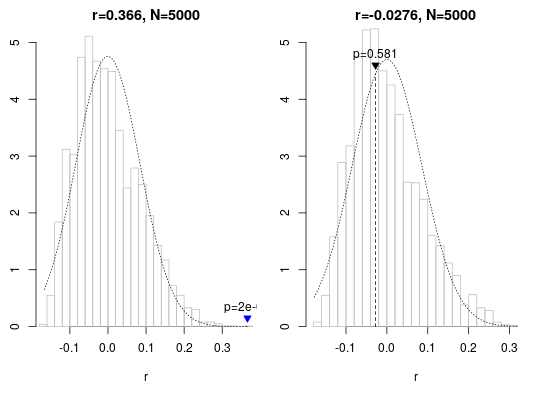

Perform a correlation test between two matrices. The Mantel test is
different from classical correlation tests (such as
cor.test) in that the null distribution of the
correlation coefficient is determined empirically by shuffling the locations
in one of the matrices and calculating the resulting correlations to
generate an empirical null distribution for the given data set.
mantel.test(x, y, ...) # S3 method for default mantel.test(x, y, plot = FALSE, method = "pearson", trials = 9999, shuffle = shuffle.locations, ...) # S3 method for formula mantel.test(x, y, groups = NULL, stringdistfun = utils::adist, meaningdistfun = hammingdists, ...) # S3 method for list mantel.test(x, y, plot = FALSE, ...) # S3 method for mantel print(x, ...) # S3 method for mantel plot(x, xlab = "generation", ...)
| x | a formula, distance matrix, or list of distance matrices (see below) |
|---|---|
| y | a data frame, distance matrix, or list of matrices of the same length as |
| ... | further arguments passed to or from other methods. |
| plot | logical: immediately produce a plot of the test results (using
|
| method | correlation coefficient to be computed (passed on to
|
| trials | maximum number of permutations to be tested |
| shuffle | a function applied to |
| groups | when |
| stringdistfun | when |
| meaningdistfun | when |
| xlab | the x axis label used when plotting the result of several Mantel tests next to each other |
A dataframe of class mantel, with one row per Mantel
test carried out, containing the following columns:
methodCharacter string specifying the type of correlation coefficient used ("pearson", "kendall" or "spearman")
statisticThe veridical correlation coefficient between the entries in the two distance matrices
rsampleA list of correlation coefficients calculated from the permutations of the input matrices
meanAverage correlation coefficient produced by the permutations
sdStandard deviation of the sampled correlation coefficients
p.valueEmpirical p-value computed from the Mantel
test: let ngreater be the number of correlation coefficients
in rsample greater than or equal to statistic, then
p.value is (ngreater+1)/(length(rsample)+1
p.approxThe theoretical p-value that would correspond
to the standard z score as calculated above.
is.unique.maxLogical, TRUE iff the veridical
correlation coefficient is greater than any of the coefficients
calculated for the permutations. If this is true, then
p.value == 1 / (length(rsample)+1)
Multiple mantel objects can easily be combined by calling
rbind(test1, test2, ...).
If the number of possible permutations of the matrices is reasonably close
to the number of permutations specified by the trials parameter, a
deterministic enumeration of all the permutations will be carried out
instead of random sampling.
plot() called on a data frame of class mantel plots a
visualisation of the test results (in particular, the distribution of
the permutated samples against the veridical correlation coefficient). If
the veridical correlation coefficient is plotted in blue it means
that it was higher than all other coefficients generated by random
permutations of the data. When the argument contains the result of more than
two Mantel tests, a side-by-side boxplot visualisation of the samples is
produced (see examples). Additional parameters ... to plot()
are passed on to plot.default.
default: Perform Mantel correlation test on two distance
matrices. The distance matrices can either be of type
dist, plain R matrices or any object that can be
interpreted by check.dist.
formula: This function can be called with experimental result
data frames, distance matrix calculation is taken care of internally.
x is a formula of the type s ~ m1 + m2 + ... where s
specifies a column of character strings in data frame or matrix y,
while m1 etc. are columns specifying the different meaning
dimensions. To calculate the respective distances, the function
stringdistfun is applied to the strings, meaningdistfun to the
meaning columns.
list: When x is a list of distance matrices, and
y is either a single distance matrix or a list of distance matrices
the same length as x: runs a Mantel test for every pairwise
combination of distance matrices in x and y and returns a
mantel object with as many rows.
cor,
adist, hammingdists,
normalisedlevenshteindists,
orderinsensitivedists
# small distance matrix, Mantel test run deterministically mantel.test(dist(1:7), dist(1:7))#>#> Mantel permutation test (method: pearson) #> r = 1, N = 21 #> 5040 permutations, mean = 3.03e-18, sd = 0.226 #> p (exact) = 0.000595 #># smallest distance matrix using random permutations (based on default trials=9999) plot(mantel.test(dist(1:8), dist(1:8), method="kendall"))#> Mantel permutation test (method: pearson) #> r = 0.366, N = 120 #> 9999 permutations, mean = 0.000161, sd = 0.0852 #> p (empirical) = 1e-04 (veridical correlation is highest found) #># using the formula interface in combination with a data frame mantel.test(word ~ Var1 + Var2, cbind(word=c("aa", "ab", "ba", "bb"), enumerate.meaningcombinations(c(2, 2))))#>#> Mantel permutation test (method: pearson) #> r = 1, N = 6 #> 24 permutations, mean = 0, sd = 0.722 #> p (exact) = 0.36 #># running tests on a list of distance matrices and plotting them plot(mantel.test(list(dist(1:8), dist(sample(8:1)), dist(runif(8))), hammingdists(enumerate.meaningcombinations(c(2, 2, 2)))), xlab="group")